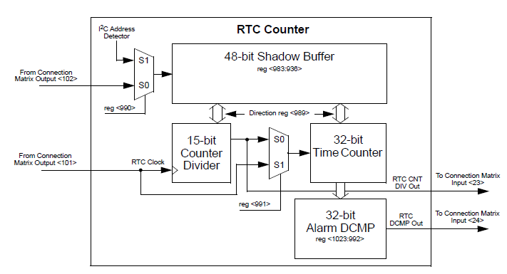

The RTC Counter is a 47-bit binary counter consisting of two components, a 15-bit Counter Divider and a 32-bit Time Counter. The 15-bit Counter Divider can divide the Clock input and generates an output to 1_sec OUT. The 32-bit Time Counter is compared to a DCMP Alarm Value and signals when the values are equal on ALARM OUT. The 32-bit Time Counter’s clock can be sourced by Clock input or the 15-bit Counter Divider.
A shadow buffer is located at address 0×75 – 0×7A, a total of 48-bits, and stores the initial value. The RTC counter can either store or load this shadow buffer depending on the transfer direction.

Set the 15-bit Counter Divider. The output of this counter divider is 1_sec OUT. Its initial value is stored in the shadow buffer and will be loaded into the counter when the chip is powered-up.
Set the 32-bit Time Counter. The output of this counter divider is compared to Alarm DCMP value. If they are equal, then a signal is generated on ALARM OUT. The initial value is stored in the shadow buffer and will be loaded into the counter when the chip is powered-up.
Set the 32-bit Digital Comparator Alarm value. When the Time Counter and the DCMP value are equal, an alarm signal is generated on ALARM OUT.
This parameter defines the direction of data transfer between the RTC Counter and Shadow Buffer.
• CNT to Buffer: RTC Counter data is copied to 48-bit shadow buffer.
• Buffer to CNT: Shadow buffer data is copied to the RTC Counter.
Select the trigger source for transferring data between the shadow buffer and the RTC counter.
• From matrix output: Rising edge of SYNC triggers data transfer between shadow buffer and RTC counter.
• From I2C address: I2C read or write activity from address 0×75 – 0×7A triggers data transfer between shadow buffer and RTC counter.
The clock source for the 32-bit Time Counter is a multiplexer between the 15-bit Counter Divider and the Clock input.